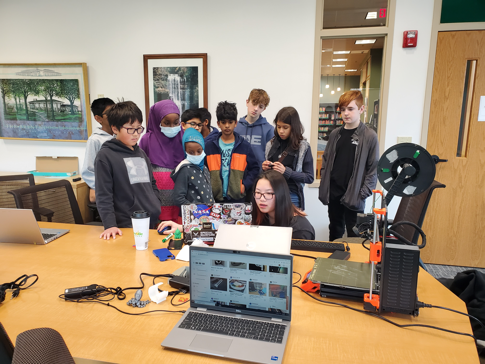
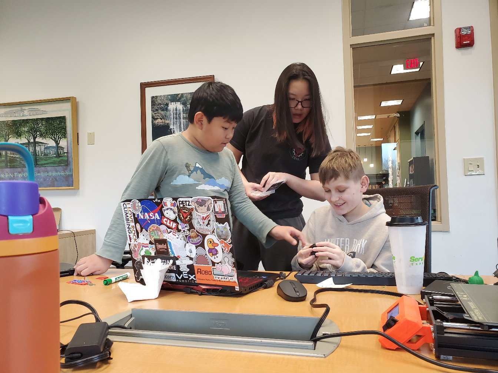
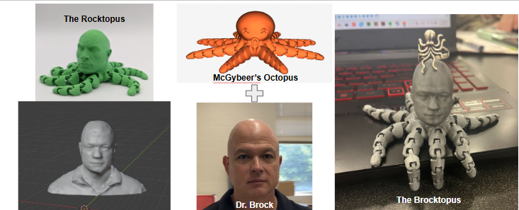
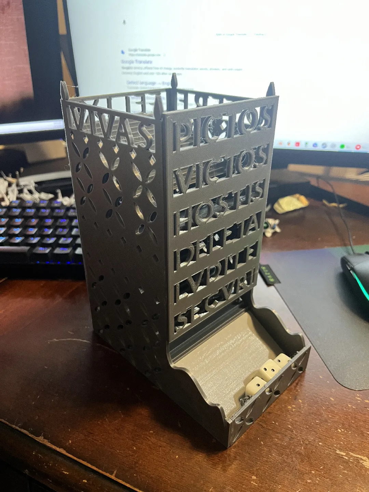
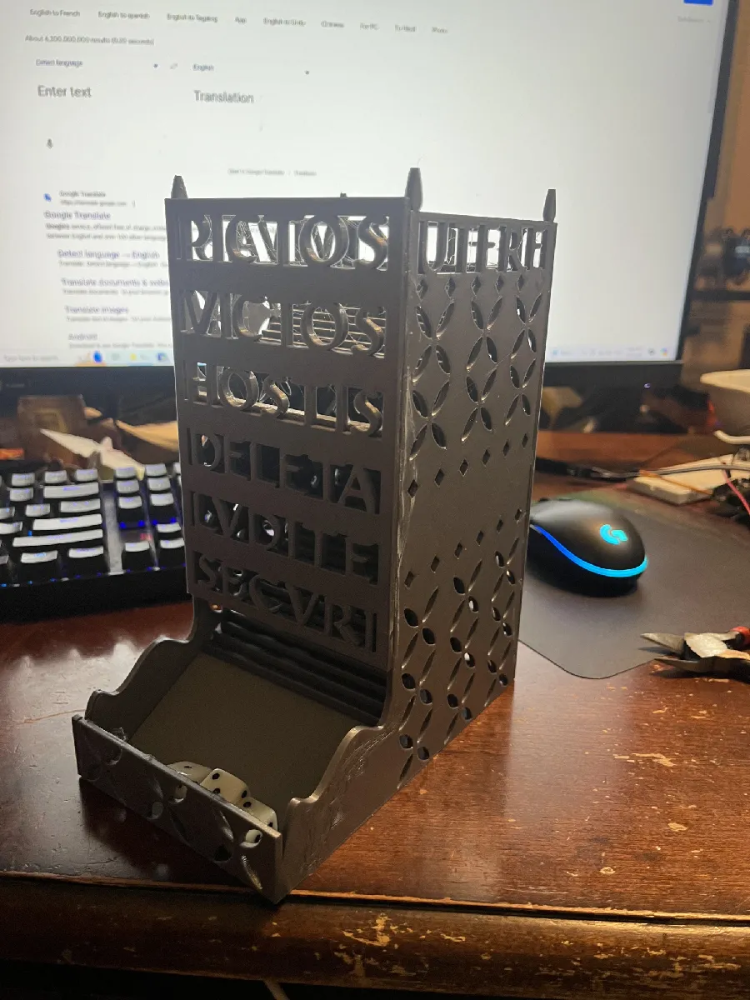

One of the kids I coached in Rock Climbing was really interested in the random 3D prints I would bring for fun, and asked me to teach a short class on 3D Printing for her Girl Scouts Troop. I ended up extending this program to be public at my local library, specifically targetting homeschoolers or younger students without access to 3D Printers in other spaces like school.
This was an expereince I really enjoyed, as I've always had an interest in teaching. It was great to share my hobby with younger kids, and I also got to tinker with the Library's printer while helping the staff set up and troubleshoot.

Uh this one is a little weird. The Rocktopus was pretty popular, and my physics teacher, Dr. Brock, happened to be bald and shared my interest in 3D Printing. So I decided to make the Brocktopus.
I didn't own a 3D scanner, and my phone at the time didn't have LIDAR. After doing some research, I stumbled upon the idea of photogrammetry. I took a video walking around Dr. Brock to convert into a png sequence. I tried numerous (free) softwares and had with the most success on Autodesk ReCap, which isn't totally free, but it was for students under the Education License. The octopus addition was simply a boolean subtract/add in Blender.
I had to do a little bit of mesh sculpting along the way, but I didn't really know what I was doing. I kinda just clicked around with random tools until it looked okay.


Wow my photography skills were not good. I guess I was in the middle of translating the Latin when taking the pictures. Ancient Roman Dice Tower- I read about it somewhere and decided to make one for my Latin Teacher one day when I got bored.